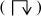

In 1890, Giuseppe Peano discovered a planar curve1 with the rather surprising property that it is “space-filling.” The curve winds around the unit square and hits every point (x, y) at least once.
Peano’s curve is based on dividing each side of the unit square into three equal parts, which divides the square into nine smaller squares. His curve traverses these nine squares in a certain order. Then, each of the nine small squares is similarly divided into nine still smaller squares, and the curve is modified to traverse all these squares in a certain order. The curve can be described using fractions expressed in base 3; in fact, that’s the way Peano first described it.
In 1891, David Hilbert [Hil] discovered a variation of Peano’s curve based on dividing each side of the unit square into two equal parts, which divides the square into four smaller squares. Then, each of the four small squares is similarly divided into four still smaller squares, and so on. For each stage of this division, Hilbert gives a curve that traverses all the squares. Hilbert’s curve, sometimes called the “Peano-Hilbert curve,” is the limit curve of this division process. It can be described using fractions expressed in base 2.
Figure 16–1 shows the first three steps in the sequence that leads to Hilbert’s space-filling curve, as they were depicted in his 1891 paper.
FIGURE 16–1. First three curves in the sequence defining Hilbert’s curve.
Here, we do things a little differently. We use the term “Hilbert curve” for any of the curves on the sequence whose limit is the Hilbert space-filling curve. The “Hilbert curve of order n” means the nth curve in the sequence. In Figure 16–1, the curves are of order 1, 2, and 3. We shift the curves down and to the left so that the corners of the curves coincide with the intersections of the lines in the boxes above. Finally, we scale the size of the order n curve up by a factor of 2n, so that the coordinates of the corners of the curves are integers. Thus, our order n Hilbert curve has corners at integers ranging from 0 to 2n – 1 in both x and y. We take the positive direction along the curve to be from (x, y) = (0, 0) to (2n – 1.0). Figure 16–2 shows the Hilbert curves of orders 1 through 6.
To see how to generate a Hilbert curve, examine the curves in Figure 16–2. The order 1 curve goes up, right, and down. The order 2 curve follows this overall pattern. First, it makes a U-shaped curve that goes up, in net effect. Second, it takes a unit step up. Third, it takes a U-shaped curve, a step, and another U, all to the right. Finally, it takes a step down, followed by a U that goes down, in net effect.
FIGURE 16–2. Hilbert curves of orders 1–6.
The order 1 inverted U is converted into the order 2 Y-shaped curve.
We can regard the Hilbert curve of any order as a series of U-shaped curves of various orientations, each of which, except for the last, is followed by a unit step in a certain direction. In transforming a Hilbert curve of one order to the next, each U-shaped curve is transformed into a Y-shaped curve with the same general orientation, and each unit step is transformed to a unit step in the same direction.
The transformation of the order 1 Hilbert curve (a U curve with a net direction to the right and a clockwise rotational orientation) to the order 2 Hilbert curve goes as follows:
1. Draw a U that goes up and has a counterclockwise rotation.
2. Draw a step up.
3. Draw a U that goes to the right and has a clockwise rotation.
4. Draw a step to the right.
5. Draw a U that goes to the right and has a clockwise rotation.
6. Draw a step down.
7. Draw a U that goes down and has a counterclockwise rotation.
We can see by inspection that all U’s that are oriented as the order 1 Hilbert curve are transformed in the same way. A similar set of rules can be made for transforming U’s with other orientations. These rules are embodied in the recursive program shown in Figure 16–3 [Voor]. In this program, the orientation of a U curve is characterized by two integers that specify the net linear and the rotational directions, encoded as follows:
Actually, dir can take on other values, but its congruency modulo 4 is what matters.
void step(int);
void hilbert(int dir, int rot, int order) {
if (order == 0) return;
dir = dir + rot;
hilbert(dir, -rot, order - 1);
step(dir);
dir = dir - rot;
hilbert(dir, rot, order - 1);
step(dir);
hilbert(dir, rot, order - 1);
dir = dir - rot;
step(dir);
hilbert(dir, -rot, order - 1);
}
FIGURE 16–3. Hilbert curve generator.
Figure 16–4 shows a driver program and function step that is used by program hilbert. This program is given the order of a Hilbert curve to construct, and it displays
a list of line segments, giving for each the direction of movement, the length along
the curve to the end of the segment, and the coordinates of the end of the segment.
For example, for order 2 it displays
0 0000 00 00
0 0001 01 00
1 0010 01 01
2 0011 00 01
1 0100 00 10
1 0101 00 11
0 0110 01 11
-1 0111 01 10
0 1000 10 10
1 1001 10 11
0 1010 11 11
-1 1011 11 10
-1 1100 11 01
-2 1101 10 01
-1 1110 10 00
0 1111 11 00
#include <stdio.h>
#include <stdlib.h>
int x = -1, y = 0; // Global variables.
int s = 0; // Dist. along curve.
int blen; // Length to print.
void hilbert(int dir, int rot, int order);
void binary(unsigned k, int len, char *s) {
/* Converts the unsigned integer k to binary character form. Result is string s of
length len. */
int i;
s[len] = 0;
for (i = len - 1; i >= 0; i--) {
if (k & 1) s[i] = ‘1’;
else s[i] = ‘0’;
k = k >> 1;
}
}
void step(int dir) {
char ii[33], xx[17], yy[17];
switch(dir & 3) {
case 0: x = x + 1; break;
case 1: y = y + 1; break;
case 2: x = x - 1; break;
case 3: y = y - 1; break;
}
binary(s, 2*blen, ii);
binary(x, blen, xx);
binary(y, blen, yy);
printf("%5d %s %s %s\n", dir, ii, xx, yy);
s = s + 1; // Increment distance.
}
int main(int argc, char *argv[]) {
int order;
order = atoi(argv[1]);
blen = order;
step(0); // Print init. point.
hilbert(0, 1, order);
return 0;
}
FIGURE 16–4. Driver program for Hilbert curve generator.
To find the (x, y) coordinates of a point located at a distance s along the order n Hilbert curve, observe that the most significant two bits of the 2n-bit integer s
determine which major quadrant the point is in. This is because the Hilbert curve of any order follows the overall pattern of the order 1 curve. If the most significant two bits of s are 00, the point is somewhere in the lower-left quadrant, if 01 it is in the upper-left quadrant, if 10 it is in the upper-right quadrant, and if 11 it is in the lower-right quadrant. Thus, the most significant two bits of s determine the most significant bits of the n-bit integers x and y, as follows:
In any Hilbert curve, only four of the eight possible U-shapes occur. These are shown in Table 16–1 as graphics and as maps from two bits of s to a single bit of each of x and y.
TABLE 16-1. THE FOUR POSSIBLE MAPPINGS
Observe from Figure 16–2 that in all cases the U-shape represented by map A  becomes, at the next level of detail, a U-shape represented by maps B, A, A, or D, depending on whether the length traversed in the first-mentioned map A is 0, 1, 2, or 3, respectively. Similarly, a U-shape represented by map B becomes, at the next level of detail, a U-shape represented by maps A, B, B, or C, depending on whether the length traversed in the first-mentioned map B is 0, 1, 2, or 3, respectively.
TABLE 16–2. STATE TRANSITION TABLE FOR COMPUTING (X, Y) FROMS
These observations lead to the state transition table shown in Table 16–2, in which the states correspond to the mappings shown in Table 16–1.
To use the table, start in state A. The integer s should be padded with leading zeros so that its length is 2n, where n is the order of the Hilbert curve. Scan the bits of s in pairs from left to right. The first row of Table 16–2 means that if the current state is A and the currently scanned bits of s are 00, then output (0, 0) and enter state B. Then, advance to the next two bits of s. Similarly, the second row means that if the current state is A and the scanned bits are 01, then output (0, 1) and stay in state A.
The output bits are accumulated in left-to-right order. When the end of s is reached, the n-bit output quantities x and y are defined.
As an example, suppose n = 3 and
s = 110100.
Because the process starts in state A and the initial bits scanned are 11, the process outputs (1, 0) and enters state D (fourth row). Then, in state D and scanning 01, the process outputs (0, 1) and stays in state D. Lastly, the process outputs (1, 1) and enters state C, although the state is now immaterial.
Thus, the output is (101, 011)—that is, x = 5 and y = 3.
A C program implementing these steps is shown in Figure 16–5. In this program, the current state is represented by an integer from 0 to 3 for
states A through D, respectively. In the assignment to variable row, the current state is concatenated with the next two bits of s, giving an integer from 0 to 15, which is the applicable row number in Table 16–2. Variable row is used to access integers (expressed in hexadecimal) that are used as bit strings
to represent the rightmost two columns of Table 16–2; that is, these accesses are in-register table lookups. Left-to-right in the hexadecimal
values corresponds to bottom-to-top in Table 16–2.
void hil_xy_from_s(unsigned s, int n, unsigned *xp,
unsigned *yp) {
int i;
unsigned state, x, y, row;
state = 0; // Initialize.
x = y = 0;
for (i = 2*n - 2; i >= 0; i -= 2) { // Do n times.
row = 4*state | (s >> i) & 3; // Row in table.
x = (x << 1) | (0x936C >> row) & 1;
y = (y << 1) | (0x39C6 >> row) & 1;
state = (0x3E6B94C1 >> 2*row) & 3; // New state.
}
*xp = x; // Pass back
*yp = y; // results.
}
FIGURE 16–5. Program for computing (x, y) from s.
[L&S] give a quite different algorithm. Unlike the algorithm of Figure 16–5, it scans the bits of s from right to left. It is based on the observation that one can map the least significant two bits of s to (x, y) based on the order 1 Hilbert curve, and then test the next two bits of s to the left. If they are 00, the values of x and y just computed should be interchanged, which corresponds to reflecting the order 1 Hilbert curve about the line x = y. (Refer to the curves of orders 1 and 2 shown in Figure 16–1 on page 355.) If these two bits are 01 or 10, the values of x and y are not changed. If they are 11, the values of x and y are interchanged and complemented. These same rules apply as one progresses leftward along the bits of s. They are embodied in Table 16–3 and the code of Figure 16–6. It is somewhat curious that the bits can be prepended to x and y first, and then the swap and complement operations can be done, including these newly prepended bits; the results are the same.
TABLE 16–3. LAM AND SHAPIRO METHOD FOR COMPUTING (X, Y) FROM S
void hil_xy_from_s(unsigned s, int n, unsigned *xp,
unsigned *yp) {
int i, sa, sb;
unsigned x, y, temp;
for (i = 0; i < 2*n; i += 2) {
sa = (s >> (i+1)) & 1; // Get bit i+1 of s.
sb = (s >> i) & 1; // Get bit i of s.
if ((sa ^ sb) == 0) { // If sa,sb = 00 or 11,
temp = x; // swap x and y,
x = y ^ (-sa); // and if sa = 1,
y = temp ^ (-sa); // complement them.
}
x = (x >> 1) | (sa << 31);// Prepend sa to x and
y = (y >> 1) | ((sa ^ sb) << 31); // (sa ^ sb) to y.
}
*xp = x >> (32 - n); // Right-adjust x and y
*yp = y >> (32 - n); // and return them to
} // the caller.
FIGURE 16–6. Lam and Shapiro method for computing (x, y) from s.
In Figure 16–6, variables x and y are uninitialized, which might cause an error message from some compilers, but the
code functions correctly for whatever values x and y have initially.
The branch in the loop of Figure 16–6 can be avoided by doing the swap operation with the “three exclusive or” trick given in Section 2–20 on page 45. The if block can be replaced by the following code, where swap and cmpl are unsigned integers:
swap = (sa ^ sb) - 1; // -1 if should swap, else 0.
cmpl = -(sa & sb); // -1 if should compl’t, else 0.
x = x ^ y;
y = y ^ (x & swap) ^ cmpl;
x = x ^ y;
This is nine instructions, versus about two or six for the if block, so the branch cost would have to be quite high for this to be a good choice.
The “swap and complement” idea of [L&S] suggests a logic circuit for generating the Hilbert curve. The idea behind the circuit, described below, is that as you trace along the path of an order n curve, you basically map pairs of bits of s to (x, y) according to map A of Table 16–1. As the trace enters various regions, the mapping output gets swapped, complemented, or both. The circuit of Figure 16–7 keeps track of the swap and complement requirements of each stage, uses the appropriate mapping to map two bits of s to (xi, yi), and generates the swap and complement signals for the next stage.
FIGURE 16–7. Logic circuit for computing (x, y) from s.
Assume there is a register containing the path length s and circuits for incrementing it. Then, to find the next point on the Hilbert curve, first increment s and then transform it as described in Table 16–4. This is a left-to-right process, which is a bit of a problem because incrementing s is a right-to-left process. Thus, the time to generate a new point on an order n Hilbert curve is proportional to 2n (for incrementing s) plus n (for transforming s to (x, y)).
TABLE 16–4. LOGIC FOR COMPUTING (X, Y) FROM S
Figure 16–7 shows this computation as a logic circuit. In this figure, S denotes the swap signal and C denotes the complement signal.
The logic circuit of Figure 16–7 suggests another way to compute (x, y) from s. Notice how the swap and complement signals propagate from left to right through the n stages. This suggests that it might be possible to use the parallel prefix operation to quickly (in log2n steps rather than n – 1) propagate the swap and complement information to each stage, and then do some word-parallel logical operations to compute x and y, using the equations in Figure 16–7. The values of x and y are intermingled in the even and odd bit positions of a word, so they have to be separated by the unshuffle operation (see page 140). This might seem a bit complicated, and likely to pay off only for rather large values of n, but let us see how it goes.
A procedure for this operation is shown in Figure 16–8 [GLS1]. The procedure operates on fullword quantities, so it first pads the input
s on the left with ‘01’ bits. This bit combination does not affect the swap and complement
quantities. Next, a quantity cs (complement-swap) is computed. This word is of the form cscs...cs, where each c (a single bit), if 1, means that the corresponding pair of bits is to be complemented,
and each s means that the corresponding pair of bits is to be swapped, following Table 16–3. In other words, these two statements map each pair of bits of s as follows:
void hil_xy_from_s(unsigned s, int n, unsigned *xp,
unsigned *yp) {
unsigned comp, swap, cs, t, sr;
s = s | (0x55555555 << 2*n); // Pad s on left with 01
sr = (s >> 1) & 0x55555555; // (no change) groups.
cs = ((s & 0x55555555) + sr) // Compute complement &
^ 0x55555555; // swap info in two-bit
// groups.
// Parallel prefix xor op to propagate both complement
// and swap info together from left to right (there is
// no step "cs ^= cs >> 1", so in effect it computes
// two independent parallel prefix operations on two
// interleaved sets of sixteen bits).
cs = cs ^ (cs >> 2);
cs = cs ^ (cs >> 4);
cs = cs ^ (cs >> 8);
cs = cs ^ (cs >> 16);
swap = cs & 0x55555555; // Separate the swap and
comp = (cs >> 1) & 0x55555555; // complement bits.
t = (s & swap) ^ comp; // Calculate x and y in
s = s ^ sr ^ t ^ (t << 1); // the odd & even bit
// positions, resp.
s = s & ((1 << 2*n) - 1); // Clear out any junk
// on the left (unpad).
// Now "unshuffle" to separate the x and y bits.
t = (s ^ (s >> 1)) & 0x22222222; s = s ^ t ^ (t << 1);
t = (s ^ (s >> 2)) & 0x0C0C0C0C; s = s ^ t ^ (t << 2);
t = (s ^ (s >> 4)) & 0x00F000F0; s = s ^ t ^ (t << 4);
t = (s ^ (s >> 8)) & 0x0000FF00; s = s ^ t ^ (t << 8);
*xp = s >> 16; // Assign the two halves
*yp = s & 0xFFFF; // of t to x and y.
}
FIGURE 16–8. Parallel prefix method for computing (x, y) from s.
This is the quantity to which we want to apply the parallel prefix operation. PP-XOR is the one to use, going from left to right, because successive 1-bits meaning to complement or to swap have the same logical properties as exclusive or: Two successive 1-bits cancel each other.
Both signals (complement and swap) are propagated in the same PP-XOR operation, each
working with every other bit of cs.
The next four assignment statements have the effect of translating each pair of bits
of s into (x, y) values, with x being in the odd (leftmost) bit positions, and y being in the even bit positions. Although the logic may seem obscure, it is not difficult
to verify that each pair of bits of s is transformed by the logic of the first two Boolean equations in Figure 16–7. (Suggestion: Consider separately how the even and odd bit positions are transformed, using the
fact that t and sr are 0 in the odd positions.)
The rest of the procedure is self-explanatory. It executes in 66 basic RISC instructions (constant, branch-free), versus about 19n + 10 (average) for the code of Figure 16–6 (based on compiled code; includes prologs and epilogs, which are essentially nil). Thus, the parallel prefix method is faster for n ≥ 3.
Given the coordinates of a point on the Hilbert curve, the distance from the origin to the point can be calculated by means of a state transition table similar to Table 16–2. Table 16–5 is such a table.
TABLE 16–5. STATE TRANSITION TABLE FOR COMPUTING S FROM (X, Y)
Its interpretation is similar to that of the previous section. First, x and y should be padded with leading zeros so that they are of length n bits, where n is the order of the Hilbert curve. Second, the bits of x and y are scanned from left to right, and s is built up from left to right.
A C program implementing these steps is shown in Figure 16–9.
unsigned hil_s_from_xy(unsigned x, unsigned y, int n) {
int i;
unsigned state, s, row;
state = 0; // Initialize.
s = 0;
for (i = n - 1; i >= 0; i--) {
row = 4*state | 2*((x >> i) & 1) | (y >> i) & 1;
s = (s << 2) | (0x361E9CB4 >> 2*row) & 3;
state = (0x8FE65831 >> 2*row) & 3;
}
return s;
}
FIGURE 16–9. Program for computing s from (x, y).
[L&S] give an algorithm for computing s from (x, y) that is similar to their algorithm for going in the other direction (Table 16–3). It is a left-to-right algorithm, shown in Table 16–6 and Figure 16–10.
TABLE 16–6. LAM AND SHAPIRO METHOD FOR COMPUTING S FROM (X, Y)
unsigned hil_s_from_xy(unsigned x, unsigned y, int n) {
int i, xi, yi;
unsigned s, temp;
s = 0; // Initialize.
for (i = n - 1; i >= 0; i--) {
xi = (x >> i) & 1; // Get bit i of x.
yi = (y >> i) & 1; // Get bit i of y.
if (yi == 0) {
temp = x; // Swap x and y and,
x = y^(-xi); // if xi = 1,
y = temp^(-xi); // complement them.
}
s = 4*s + 2*xi + (xi^yi); // Append two bits to s.
}
return s;
}
FIGURE 16–10. Lam and Shapiro method for computing s from (x, y).
Given the (x, y) coordinates of a point on the order n Hilbert curve, how can one find the coordinates of the next point? One way is to convert (x, y) to s, add 1 to s, and then convert the new value of s back to (x, y), using algorithms given above.
A slightly (but not dramatically) better way is based on the fact that as one moves along the Hilbert curve, at each step either x or y, but not both, is either incremented or decremented (by 1). The algorithm to be described scans the coordinate numbers from left to right to determine the type of U-curve that the rightmost two bits are on. Then, based on the U-curve and the value of the rightmost two bits, it increments or decrements either x or y.
That’s basically it, but there is a complication when the path is at the end of a U-curve (which happens once every four steps). At this point, the direction to take is determined by the previous bits of x and y and by the higher order U-curve with which these bits are associated. If that point is also at the end of its U-curve, then the previous bits and the U-curve there determine the direction to take, and so on.
Table 16–7 describes this algorithm. In this table, the A, B, C, and D denote the U-curves as shown in Table 16–1 on page 360. To use the table, first pad x and y with leading zeros so they are n bits long, where n is the order of the Hilbert curve. Start in state A and scan the bits of x and y from left to right. The first row of Table 16–7 means that if the current state is A and the currently scanned bits are (0, 0), then set a variable to indicate to increment y, and enter state B. The other rows are interpreted similarly, with a suffix minus sign indicating to decrement the associated coordinate. A dash in the third column means do not alter the variable that keeps track of the coordinate changes.
TABLE 16–7. TAKING ONE STEP ON THE HILBERT CURVE
After scanning the last (rightmost) bits of x and y, increment or decrement the appropriate coordinate as indicated by the final value of the variable.
A C program implementing these steps is shown in Figure 16–11. Variable dx is initialized in such a way that if invoked many times, the algorithm cycles around,
generating the same Hilbert curve over and over again. (However, the step that connects
one cycle to the next is not a unit step.)
void hil_inc_xy(unsigned *xp, unsigned *yp, int n) {
int i;
unsigned x, y, state, dx, dy, row, dochange;
x = *xp;
y = *yp;
state = 0; // Initialize.
dx = -((1 << n) - 1); // Init. -(2**n - 1).
dy = 0;
for (i = n-1; i >= 0; i--) { // Do n times.
row = 4*state | 2*((x >> i) & 1) | (y >> i) & 1;
dochange = (0xBDDB >> row) & 1;
if (dochange) {
dx = ((0x16451659 >> 2*row) & 3) - 1;
dy = ((0x51166516 >> 2*row) & 3) - 1;
}
state = (0x8FE65831 >> 2*row) & 3;
}
*xp = *xp + dx;
*yp = *yp + dy;
}
FIGURE 16–11. Program for taking one step on the Hilbert curve.
Table 16–7 can readily be implemented in logic, as shown in Figure 16–12. In this figure, the variables have the following meanings:
S and C together identify the “state” of Table 16–7, with (C, S) = (0,0), (0,1), (1,0), and (1,1) denoting states A, B, C, and D, respectively. The output signals are I0 and W0, which tell, respectively, whether to increment or decrement, and which variable to change. (In addition to the logic shown, an incrementer/decrementer circuit is required, with MUX’s to route either x or y to the incrementer/decrementer, and a circuit to route the altered value back to the register that holds x or y. Alternatively, two incrementer/decrementer circuits could be used.)
FIGURE 16–12. Logic circuit for incrementing (x, y) by one step along the Hilbert curve.
The algorithms of Tables 16–2 and 16–7 provide two non-recursive algorithms for generating the Hilbert curve of any order. Either algorithm can be implemented in hardware without great difficulty. Hardware based on Table 16–2 includes a register holding s, which it increments for each step, and then converts to (x, y) coordinates. Hardware based on Table 16–7 would not have to include a register for s, but the algorithm is more complicated.
As was mentioned, Peano was first, in 1890, to discover a space-filling curve. The many variations discovered since then are often called “Peano curves.” One interesting variation of Hilbert’s curve was discovered by Eliakim Hastings Moore in 1900. It is “cyclic” in the sense that the end point is one step away from the starting point. The Peano curve of order 3, and the Moore curve of order 4, are shown in Figure 16–13. Moore’s curve has an irregularity in that the order 1 curve is upright-down , but this shape does not appear in the higher-order curves. Except for this minor exception, the algorithms for dealing with Moore’s curve are very similar to those for the Hilbert curve.

FIGURE 16–13. Peano (left) and Moore (right) curves.
The Hilbert curve has been generalized to arbitrary rectangles and to three and higher dimensions. The basic building block for a three-dimensional Hilbert curve is shown below. It hits all eight points of a 2×2×2 cube. These and many other space-filling curves are discussed in [Sagan].
Space-filling curves have applications in image processing: compression, halftoning, and textural analysis [L&S]. Another application is to improve computer performance in ray tracing, a graphics-rendering technique. Conventionally, a scene is scanned by projecting rays across the scene in ordinary raster scan line order (left to right across the screen, and then top to bottom). When a ray hits an object in the simulated scene’s database, the color and other properties of the object at that point are determined, and the results are used to illuminate the pixel through which the ray was sent. (This is an oversimplification, but it’s adequate for our purposes.) One problem is that the database is often large and the data on each object must be paged in and cast out as various objects are hit by the scanning ray. When the ray scans across a line, it often hits many objects that were hit in the previous scan, requiring them to be paged in again. Paging operations would be reduced if the scanning had some kind of locality property. For example, it might be helpful to scan a quadrant of the screen completely before going on to another quadrant.
The Hilbert curve seems to have the locality property we are seeking. It scans a quadrant completely before scanning another, recursively, and also does not make a long jump when going from one quadrant to another.
Douglas Voorhies [Voor] has simulated what the paging behavior would likely be for the conventional uni-directional scan line traversal, the Peano curve, and the Hilbert curve. His method is to scatter circles of a given size randomly on the screen. A scan path hitting a circle represents touching a new object, and paging it in. When a scan leaves a circle, it is presumed that the object’s data remains in memory until the scan exits a circle of radius twice that of the “object” circle. Thus, if the scan leaves the object for just a short distance and then returns to it, it is assumed that no paging operation occurred. He repeats this experiment for many different sizes of circles, on a simulated 1024×1024 screen.
Assume that entering an object circle and leaving its surrounding circle represent one paging operation. Then, clearly the normal scan line causes D paging operations in covering a (not too big) circle of diameter D pixels, because each scan line that enters it leaves its outer circle. The interesting result of Voorhies’s simulation is that for the Peano curve, the number of paging operations to scan a circle is about 2.7 and, perhaps surprisingly, is independent of the circle’s diameter. For the Hilbert curve, the figure is about 1.4, also independent of the circle’s diameter. Thus, the experiment suggests that the Hilbert curve is superior to the Peano curve, and vastly superior to the normal scan line path, in reducing paging operations. (The result that the page count is independent of the circles’ diameters is probably an artifact of the outer circle’s being proportional in size to the object circle.)
The Hilbert curve has been used to assign jobs to processors when the processors are interconnected in a rectangular 2D or 3D grid [Cplant]. The processor allocation system software uses a linear list of the processors that follows a Hilbert curve over the grid. When a job that requires a number of processors is scheduled to run, the allocator allocates them from the linear list, much as a memory allocator would do. The allocated processors tend to be close together on the grid, which leads to good intercommunication properties.
1. A simple way to cover an n × n grid in a way that doesn’t make too many big jumps, and hits every point once and only once, is to have a 2n-bit variable s that is incremented at each step, and form x from the first and every other bit of s, and y from the second and every other bit of s. This is equivalent to computing the perfect outer unshuffle of s, and then letting x and y be the left and right halves of the result. Investigate this curve’s locality property by sketching the curve for n = 3.
2. A variation of exercise 1 is to first transform s into Gray(s) (see page 312), and then let x and y be formed from every other bit of the result, as in exercise 1. Sketch the curve for n = 3. Has this improved the locality property?
3. How would you construct a three-dimensional analog of the curve of exercise 1?